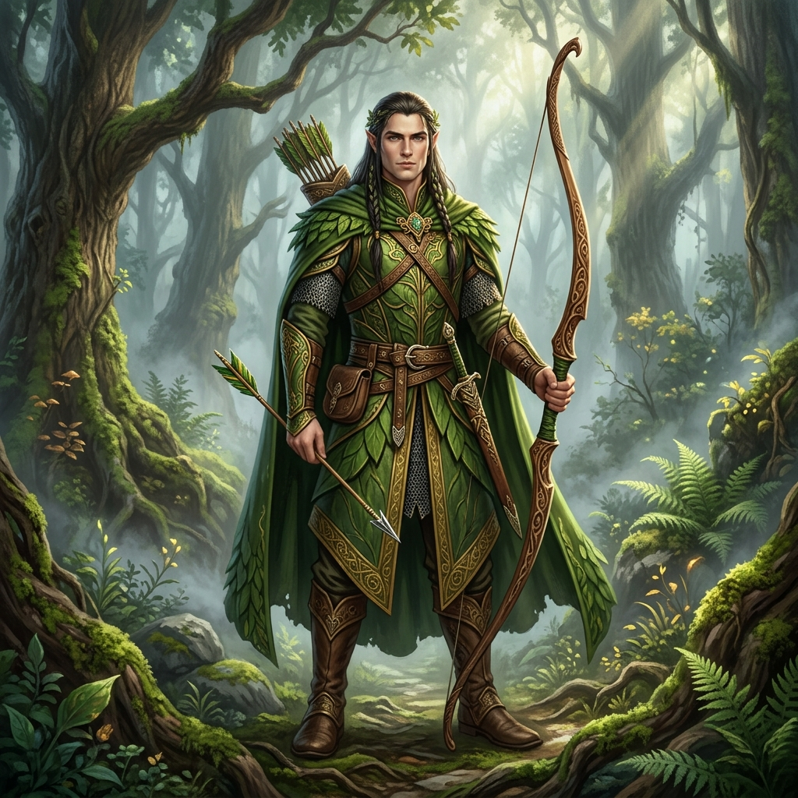

The Elf
Guardian of the Ancient Woods
Masters of the Canopy
Swift, silent, and possessing centuries of wisdom, the elves are the true caretakers of the magical forest. They walk across fallen branches without making a sound and their arrows never miss their mark.
Clad in garments woven from shadow and leaves, they blend perfectly with their surroundings. Encountering an elf is a rare privilege, usually indicating that they have chosen to reveal themselves to you for a specific reason.